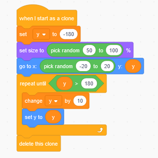

Challenge 05/06/2021: Bubbles
If you want to make a bubble project, you can follow the instructions on this page.
Bubble joke
What is a bubble’s favourite drink?
Pop!
Bubbles project
The instructions below describe how to make a project like this one:
Here is how to make your own bubble tank project in Scratch:
Make a bubble
- Start a new Scratch project
- Delete the cat
- Choose a nice water background
- Create a new sprite to paint yourself
- Rename the sprite
bubble - Choose the circle tool
- Before you draw your circle, set the colour
- Click on the
Fillcolour and make it transparent (the red line button) - Click on the
Outlinecolour and make it blue - Draw a small circle around the centre cross. Click and drag with the mouse.
Make your bubble float up
- Click on the
Codetab - Drag in a
go to x: ◯ y: ◯block - Type 0 in the
xslot - Type -180 in the
yslot - Add a
repeat until ◇block - Drag a
change y by ◯block inside the loop - This time, set the
yslot to 10 - And drag a
◯ > ◯block into the until slot - Put a blue
y positionblock into the left hand side - And type 180 into the right hand side
Test your project
Click your code blocks! Does your bubble float to the top?
Clone your bubbles
- Put a
when I start as a cloneblock on top of your code - And put a
delete this cloneblock at the bottom - Drag a
when green flag clickedblock to a new part of your code window - Add a
foreverblock underneath - And put a
create clone of myselfblock inside
Test your project
Click the green flag! Do you get a long stream of bubbles floating up?
Do you notice that your bubbles are all in a straight line?
Let us add some randomness.
Add randomness
- Drag a
Pick random ◯ to ◯into thexslot of thego toblock - Type -20 into the left hand side
- Type 20 into the right hand side
- Insert a
set size to ◯ %block after thewhen I start as a cloneblock - Drag another
Pick random ◯ to ◯into thesizeslot - Type 50 into the left hand side
- Type 100 into the right hand side
Test your project
Do you get a mixture of bubbles of different sizes spread around the middle of the screen?
Can you see a line of bubbles getting stuck at the top of the screen?
Fixing the Scratch position bug
Whenever you use a move or go to block, Scratch will attempt to make sure your sprite stays on the screen.
But to make our loop exit, we need the sprite to go off the top of the screen.
We can fix this by using a variable instead of relying on Scratch’s sprite position.
Adding a y position variable
- Click on the orange Variables section
- Click on the
Make a variablebutton - Call the variable
y - Make sure to click the
For this sprite onlybutton - Click on
OKto create the variable - Insert a
set y to ◯under thewhen I start as a cloneblock - Type -180 into the new set block
- Drag the
yvariable block into theyslot of thego toblock - And replace the blue
y positionblock with anotheryblock - Replace the blue
change yblock with thechange y by ◯block - Type 10 into the
yslot - Insert a
set y to ◯ - And drag a final
yblock into the blueset yslot.
Test your project
Your fixed code should look like this:
Have you fixed the problem with the bubbles getting stuck at the top?
Challenges
- Can you make your bubbles wobble as they float up?
- Can you improve the shading on your bubble sprite?
- Can you add sound to your project?
- Can you make bubbles start from the mouse’s position?
Submission
Be sure to submit your entry before Thursday and I will include your work in next week’s newsletter. Send your first name, age, and project link to paul.sinnett@gmail.com.